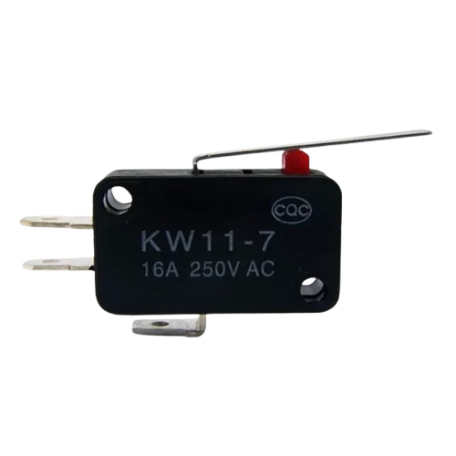
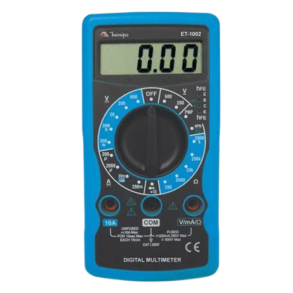

Sensores e Instrumentação
SENSOR FIM DE CURSO
O sensor de fim de curso é um dispositivo eletromecânico ou eletrônico utilizado para detectar quando uma peça móvel atinge uma posição pré-determinada. Ao ser acionado, ele envia um sinal para interromper, iniciar ou alterar uma operação no sistema. Quando um objeto ou mecanismo toca o atuador do sensor (alavanca, botão ou rolete), seus contatos elétricos mudam de estado, informando ao circuito que o limite de movimento foi alcançado.
Aplicações
O sensor de fim de curso é utilizado para controlar e monitorar o movimento de máquinas e equipamentos. Ele é aplicado em portões automáticos, elevadores, esteiras transportadoras e máquinas industriais, ajudando a detectar posições limite, evitar danos mecânicos e aumentar a segurança do sistema.

MULTÍMETRO
O multímetro é um instrumento de medição utilizado para verificar grandezas elétricas em circuitos, como tensão, corrente e resistência. Ele pode ser analógico ou digital e é uma ferramenta essencial para testes e manutenção elétrica e eletrônica.
Onde pode ser utilizado
O multímetro é utilizado para medir tensão elétrica, corrente elétrica e resistência, testar continuidade de fios e cabos, verificar o funcionamento de componentes eletrônicos, identificar falhas em circuitos elétricos e realizar manutenção em equipamentos elétricos e eletrônicos.
